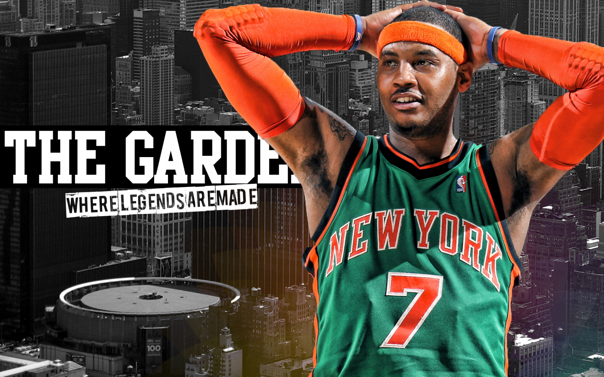
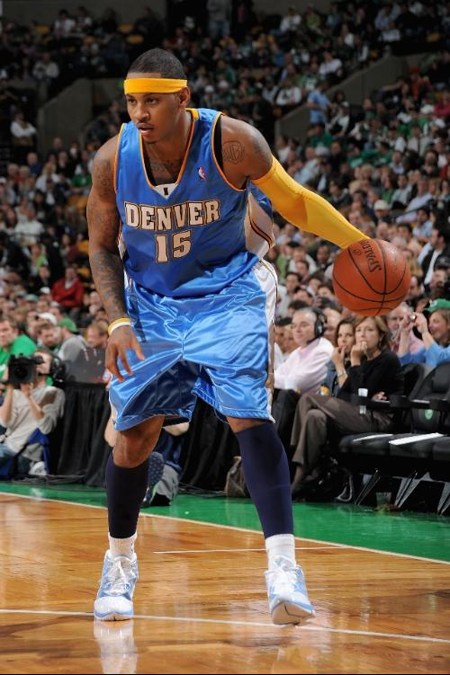
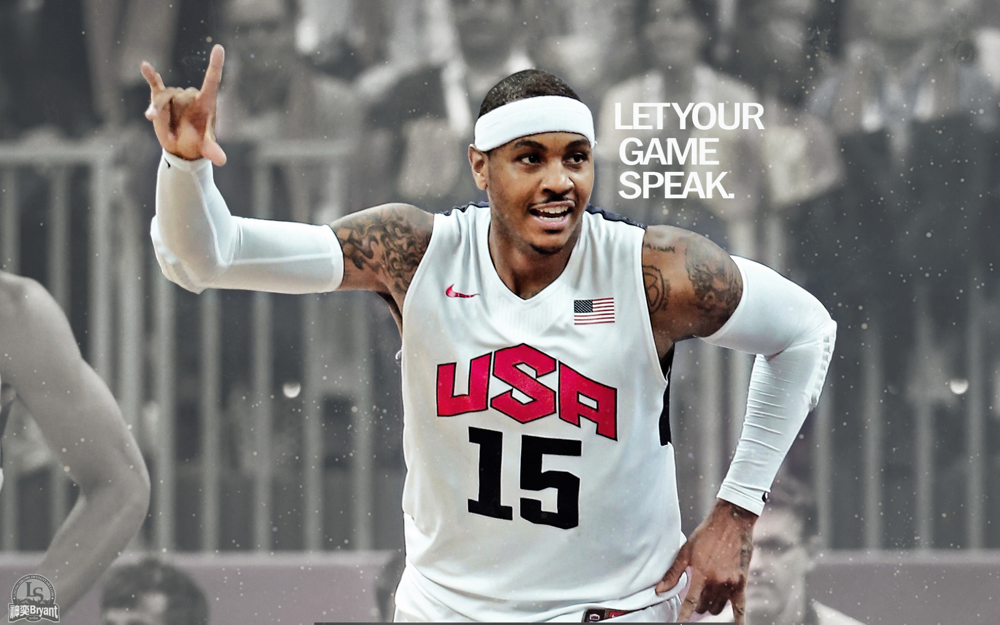
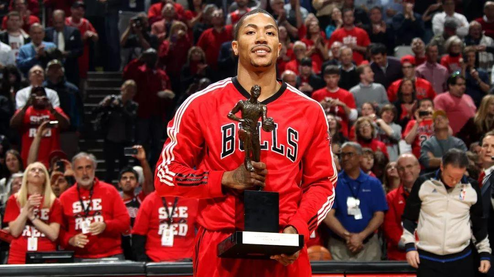
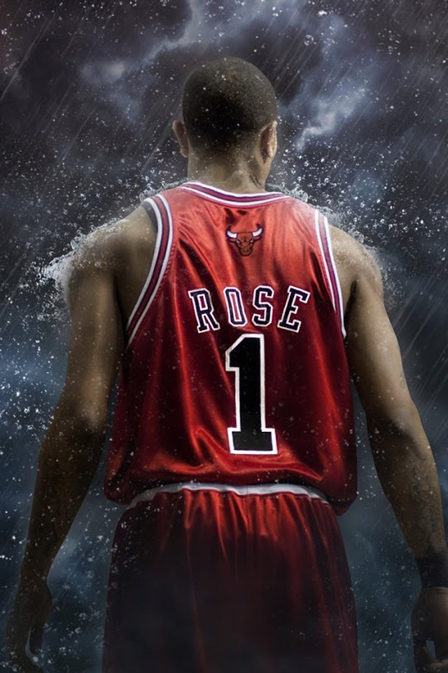
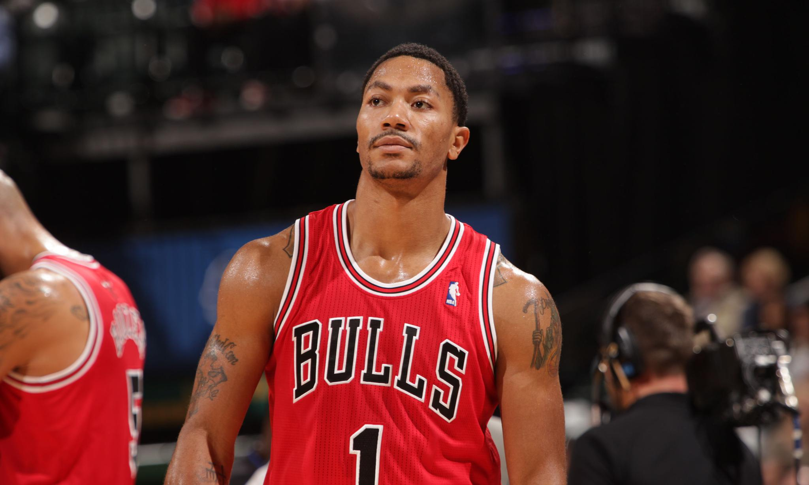

首页
球星介绍
精彩集锦
我与球星
留言板
精彩集锦
回顾两位球星的经典时刻
卡梅隆·安东尼经典比赛

2009年西部决赛
对阵湖人队的精彩表现

2013年得分王赛季
场均28.7分，荣膺得分王

全明星赛表现
10次全明星赛的精彩瞬间
德里克·罗斯经典比赛

2011年MVP赛季
最年轻MVP的辉煌时刻

季后赛表现
带领公牛队征战季后赛

全明星赛表现
3次全明星赛的精彩瞬间
经典对决
日期
比赛
精彩时刻
2011年1月15日
尼克斯 vs 公牛
安东尼砍下35分，罗斯贡献32分
2012年4月8日
尼克斯 vs 公牛
安东尼43分，罗斯29分
2013年3月3日
尼克斯 vs 公牛
安东尼36分，罗斯24分